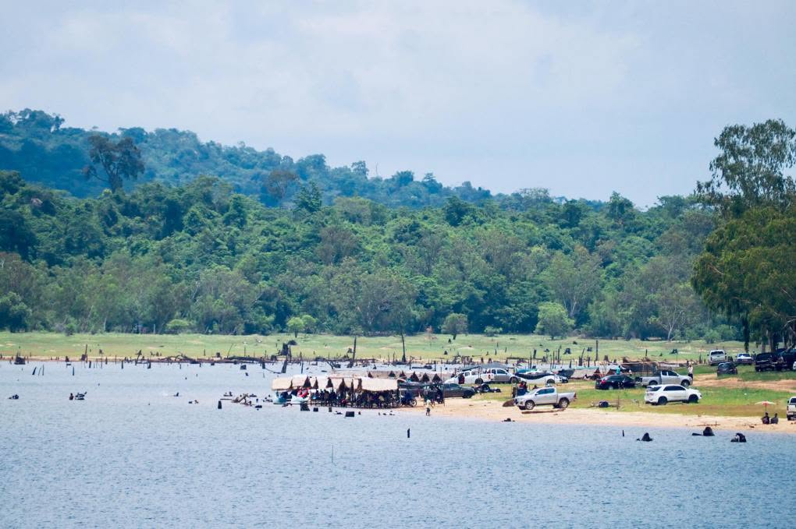
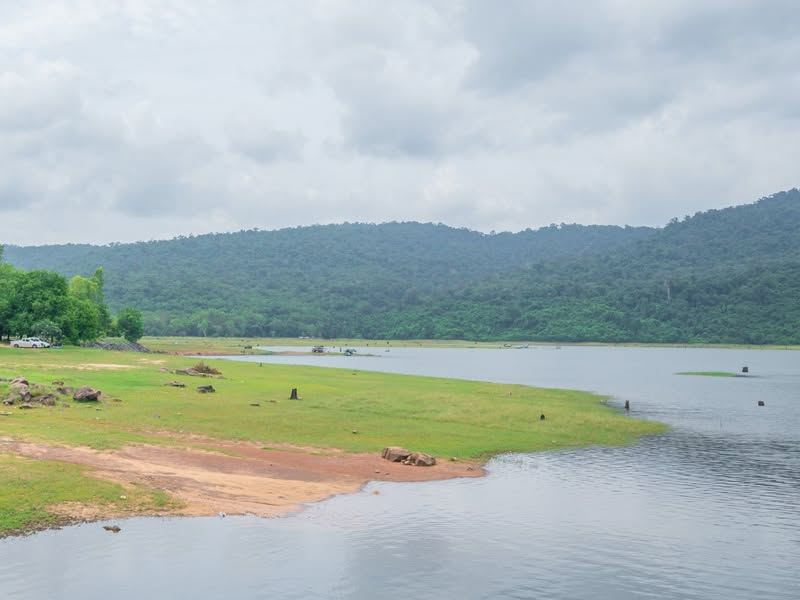
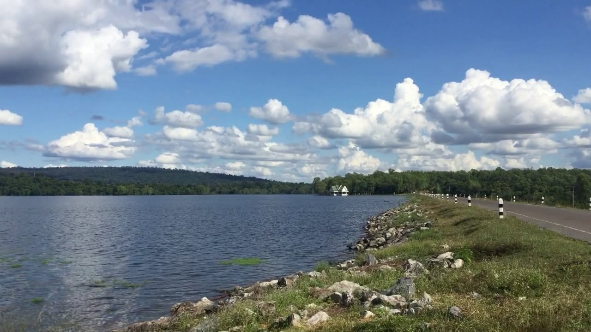

เกี่ยวกับอ่างเก็บน้ำท่ากระบาก
อ่างเก็บน้ำท่ากระบากเป็นสถานที่ท่องเที่ยวทางธรรมชาติที่มีความโดดเด่นด้านผืนน้ำและทัศนียภาพโดยรอบ เหมาะสำหรับผู้ที่ต้องการพักผ่อนและเปลี่ยนบรรยากาศจากพื้นที่ในเมือง
บริเวณอ่างเก็บน้ำมีบรรยากาศที่ค่อนข้างสงบและมีพื้นที่ธรรมชาติโดยรอบ ทำให้สามารถมานั่งชมวิว รับประทานอาหาร และใช้เวลาว่างกับเพื่อนหรือครอบครัวได้
สถานที่แห่งนี้จึงเป็นอีกหนึ่งจุดหมายด้านการท่องเที่ยวเชิงธรรมชาติของจังหวัดสระแก้ว
ที่ตั้งและลักษณะพื้นที่
อ่างเก็บน้ำท่ากระบากตั้งอยู่ในจังหวัดสระแก้ว เป็นพื้นที่ที่ประกอบด้วยผืนน้ำและภูมิประเทศธรรมชาติโดยรอบ เหมาะกับการพักผ่อนและชมวิว
จังหวัด
สระแก้ว
ประเภท
แหล่งท่องเที่ยวทางธรรมชาติ
ลักษณะพื้นที่
อ่างเก็บน้ำและพื้นที่ธรรมชาติ
จุดเด่น
ผืนน้ำ วิวธรรมชาติ และบรรยากาศพักผ่อน
บรรยากาศของสถานที่
บริเวณอ่างเก็บน้ำมีผืนน้ำกว้างและมีธรรมชาติอยู่โดยรอบ ทำให้เกิดบรรยากาศที่เหมาะสำหรับการนั่งพักผ่อนและชมทิวทัศน์
ความเรียบง่ายของพื้นที่เหมาะกับการมาเที่ยวแบบสบาย ๆ โดยเฉพาะช่วงเย็นที่สามารถชมแสงอาทิตย์และวิวที่สะท้อนบนผิวน้ำได้
ทิวทัศน์และจุดชมวิว
จุดเด่นของอ่างเก็บน้ำท่ากระบากคือทิวทัศน์ของผืนน้ำที่มีพื้นที่ธรรมชาติและภูเขาโดยรอบ ทำให้สามารถมองเห็นวิวได้ในมุมกว้าง
นักท่องเที่ยวสามารถนั่งชมวิวและเก็บภาพบรรยากาศ โดยเฉพาะช่วงเช้าหรือช่วงเย็นที่แสงธรรมชาติช่วยเพิ่มความสวยงามให้กับพื้นที่
กิจกรรมที่น่าสนใจ
- นั่งพักผ่อนริมอ่างเก็บน้ำ
- ชมวิวและทิวทัศน์โดยรอบ
- ถ่ายภาพธรรมชาติ
- รับประทานอาหารและเครื่องดื่ม
- ปั่นเรือเป็ดในบริเวณที่จัดไว้
- พักผ่อนและกางเต็นท์ตามพื้นที่ที่กำหนด
กิจกรรมปั่นเรือเป็ด
การปั่นเรือเป็ดเป็นกิจกรรมที่ช่วยเพิ่มความสนุกให้กับการเที่ยวอ่างเก็บน้ำ เหมาะสำหรับผู้ที่มาเที่ยวกับเพื่อนหรือครอบครัวและต้องการทำกิจกรรมเบา ๆ พร้อมชมบรรยากาศของผืนน้ำ
อาหารและเครื่องดื่ม
บริเวณอ่างเก็บน้ำมีบริการอาหารและเครื่องดื่มสำหรับนักท่องเที่ยว ทำให้สามารถแวะพักและรับประทานอาหารระหว่างการเดินทางได้
การกางเต็นท์และช่วงเวลาที่เหมาะ
ผู้ที่ชื่นชอบการพักผ่อนใกล้ชิดธรรมชาติสามารถกางเต็นท์ตามพื้นที่และเงื่อนไขที่สถานที่กำหนด ควรตรวจสอบกติกาก่อนเดินทาง
ช่วงเช้าและช่วงเย็นเหมาะสำหรับนั่งพักผ่อน ชมวิว และถ่ายภาพพระอาทิตย์ตก เพราะอากาศโดยทั่วไปไม่ร้อนมาก
การถ่ายภาพและการพักผ่อน
อ่างเก็บน้ำท่ากระบากเหมาะสำหรับการถ่ายภาพทิวทัศน์ เนื่องจากมีองค์ประกอบของผืนน้ำ ภูเขา และธรรมชาติโดยรอบ
ผู้มาเยือนสามารถนั่งชมวิว รับประทานอาหาร และใช้เวลาร่วมกับครอบครัวหรือเพื่อนอย่างไม่เร่งรีบ
จุดเด่นของสถานที่
- มีผืนน้ำและธรรมชาติโดยรอบ
- บรรยากาศเหมาะสำหรับพักผ่อน ชมวิว และถ่ายภาพ
- มีกิจกรรมปั่นเรือเป็ด
- มีอาหารและเครื่องดื่ม
- สามารถกางเต็นท์ได้ตามเงื่อนไขของพื้นที่
เหมาะสำหรับใคร?
- คนที่ชอบพักผ่อนใกล้ธรรมชาติ
- ครอบครัวและกลุ่มเพื่อน
- คนที่ชอบถ่ายภาพและกิจกรรมริมน้ำ
- ผู้ที่สนใจการกางเต็นท์
ความสำคัญต่อจังหวัดสระแก้ว
อ่างเก็บน้ำท่ากระบากช่วยเพิ่มความหลากหลายให้กับจังหวัดสระแก้ว โดยเป็นจุดหมายสำหรับผู้ที่ต้องการชมธรรมชาติ พักผ่อน และทำกิจกรรมริมน้ำนอกเหนือจากสถานที่ท่องเที่ยวประเภทอื่น
สิ่งที่ควรรู้ก่อนเที่ยว
- ควรตรวจสอบสภาพอากาศก่อนเดินทาง
- ควรรักษาความสะอาดและไม่ทิ้งขยะลงในแหล่งน้ำ
- ควรปฏิบัติตามคำแนะนำของผู้ดูแลพื้นที่
ทำไมถึงน่าสนใจ?
อ่างเก็บน้ำท่ากระบากมีจุดเด่นที่เรียบง่ายและเหมาะกับการพักผ่อน เพราะมีทั้งผืนน้ำ ธรรมชาติ และบรรยากาศที่เงียบสงบ นักท่องเที่ยวสามารถเลือกชมวิว ถ่ายภาพ ปั่นเรือเป็ด รับประทานอาหาร หรือพักแรมในพื้นที่ที่กำหนด
ข้อมูลสรุป
ชื่อสถานที่
อ่างเก็บน้ำท่ากระบาก
ประเภท
แหล่งท่องเที่ยวทางธรรมชาติ
จังหวัด
สระแก้ว
จุดเด่น
ผืนน้ำ วิวธรรมชาติ และการพักผ่อน